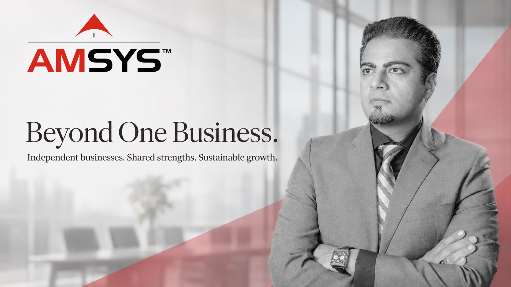

By Khalid “KP” Parekh | Founder, Chairman & CEO, AMSYS Group
The challenge of building one business is significant. Building several businesses under one enterprise introduces another layer of complexity: how can each company preserve the focus and accountability that made it valuable while benefiting from the resources of a larger organization?
That question matters more than the number of businesses in a portfolio. Diversification can open new markets and create new opportunities, but growth alone does not make an enterprise stronger. The operating model matters: who makes decisions, which capabilities are shared, and how businesses remain accountable for their results.
For leaders looking beyond a single company, a useful starting point is to distinguish owning more businesses from building a system that helps businesses operate better.
The Transition from Company Growth to Enterprise Design
A single business can often organize its processes, talent, and investments around one primary market. A diversified enterprise needs to accommodate different customers, business models, and operating conditions without imposing unnecessary complexity on every company.
AMSYS Group offers an example of this transition. Founded as an IT company in Houston in 2003, AMSYS has developed into a broader group spanning technology and other operational capabilities. Its public description now emphasizes an operator-led model: business leaders retain meaningful ownership and operational autonomy while gaining access to resources available across the group.
The distinction is important. Enterprise growth is not just a question of entering another industry. It involves designing the relationships between the businesses, the shared platform, and the leaders responsible for results.
The Case for Operator Autonomy
Leaders closest to a business usually have the clearest view of its customers, service requirements, and day-to-day constraints. A healthcare technology operation may have priorities that differ materially from an energy field-services business or a technical talent provider.
A diversified group must account for those differences.
One approach is to give operating-company leaders room to make decisions within an agreed framework of financial, operational, and ethical accountability. This can help preserve responsiveness while ensuring that the enterprise has visibility into performance and risk.
Autonomy, however, is not the same as isolation. When each company must independently rebuild every administrative function, technology platform, or commercial process, the group can miss some of the advantages of its scale.
The real design challenge is determining what should stay close to the operator and what should be made easier through shared resources.
Shared Capabilities Should Reduce Friction
The value of a shared operating model is not simply centralization. It is the ability to remove work that distracts leaders from customers, service delivery, and business development.
AMSYS Group describes its AMSYS Operating System as a shared layer of services for its operating companies. The group also describes access to capital, talent, AI, technology, and go-to-market capabilities as part of its model, while retaining operating autonomy at the company level.
That provides a concrete example of the principle: shared support can strengthen individual businesses without requiring identical approaches to every market.
In practice, leaders evaluating a shared-services model should ask:
- Which functions are genuinely more effective when handled across the group?
- Which decisions require industry-specific expertise and local accountability?
- How will the group measure whether shared services improve speed, quality, or cost?
- Where might standardization create more friction than it removes?
A shared platform only creates value when the companies using it experience a real operational benefit.
Accountability Must Be Clear at Every Level
Diversification also changes the leadership task. The founder or executive team cannot remain the decision-maker for every customer issue, hiring choice, or operational challenge across multiple businesses.
Scalable management calls for clear responsibilities: operating leaders own delivery and performance; group leadership sets the broader investment and governance framework; and shared teams support functions where coordination makes sense.
A good enterprise model makes these boundaries easier to understand, not harder.
Leaders should be able to answer three questions without ambiguity: Who owns the customer relationship? Who is accountable for business performance? And when does a decision require group-level involvement?
Without those answers, even well-intentioned collaboration can produce delays, duplicated effort, and unclear accountability.
Diversification Is Not a Substitute for Discipline
Operating in several industries can widen an enterprise's opportunity set, but it does not eliminate risk. Different businesses may face different capital requirements, operating cycles, customer expectations, and regulatory obligations.
That is why a diversification decision should be examined on more than market potential alone. The enterprise needs to understand whether it has the management depth, financial capacity, technology foundation, and execution discipline to support another business.
The goal is not to accumulate businesses for their own sake. It is to develop a portfolio in which the group can support each company responsibly and where the rationale for being part of the enterprise remains clear over time.
Technology Helps, but the Operating Model Comes First
Technology can make a diversified enterprise easier to run. Connected systems can support financial visibility, workforce coordination, security, and reporting. AI may help teams automate repetitive tasks or access operational information more effectively.
But digital tools cannot repair an unclear division of responsibilities. A reporting dashboard does not establish accountability; an automated workflow does not replace sound governance.
Because AMSYS began in technology services and now works across enterprise infrastructure, AI, security, and talent, its public business model provides a useful lens for this conversation. The strategic question remains how to put these capabilities to work in ways that support the needs of each operating company.
Technology becomes more valuable when it reinforces a well-designed business model instead of being asked to substitute for one.
Building an Enterprise That Can Keep Evolving
Markets will change, and so will the needs of individual businesses. A diversified enterprise therefore needs both a consistent foundation and the flexibility to evolve.
That balance comes from a few durable priorities: capable operating leaders, transparent accountability, thoughtful capital allocation, practical shared services, and a clear understanding of why each company belongs in the group.
The broader lesson illustrated by the evolution of AMSYS Group is that enterprise development is not simply expansion. It is the ongoing work of designing an organization where independent businesses can maintain their focus while benefiting from collective capability.
The question for a leader building beyond one business is not only what can we add next? It is what can we build together that each business would struggle to build alone?
About the Author
Khalid “KP” Parekh is the Founder, Chairman, and CEO of AMSYS Group, a Houston-founded enterprise with capabilities spanning technology, infrastructure, energy, and specialized talent. Read more on Khalid Parekh's official website or visit the AMSYS leadership page.